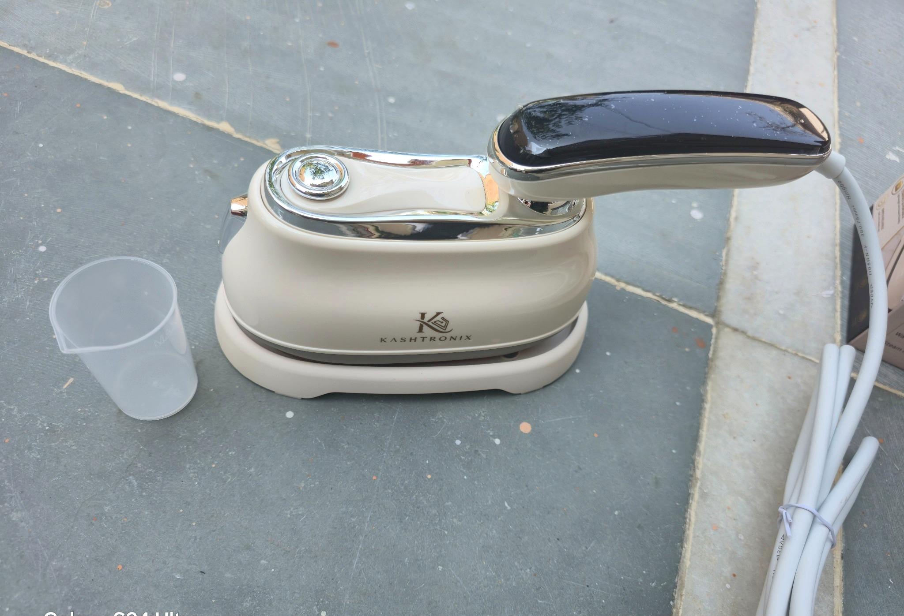
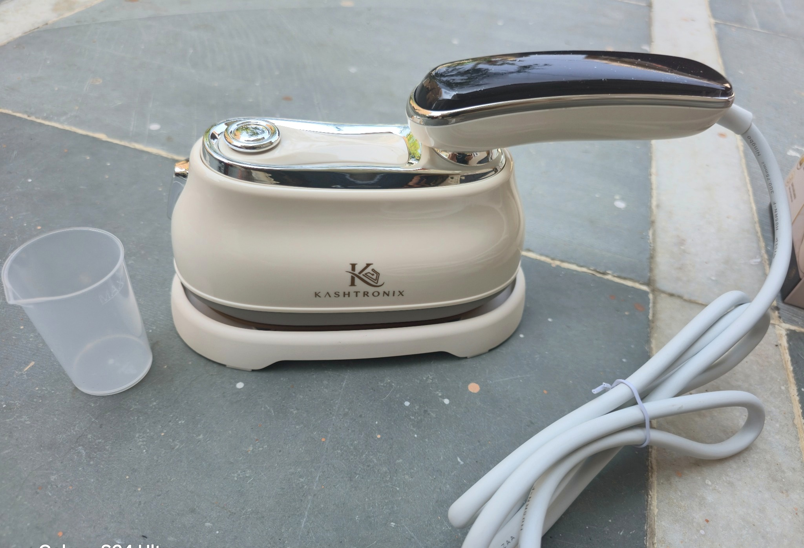
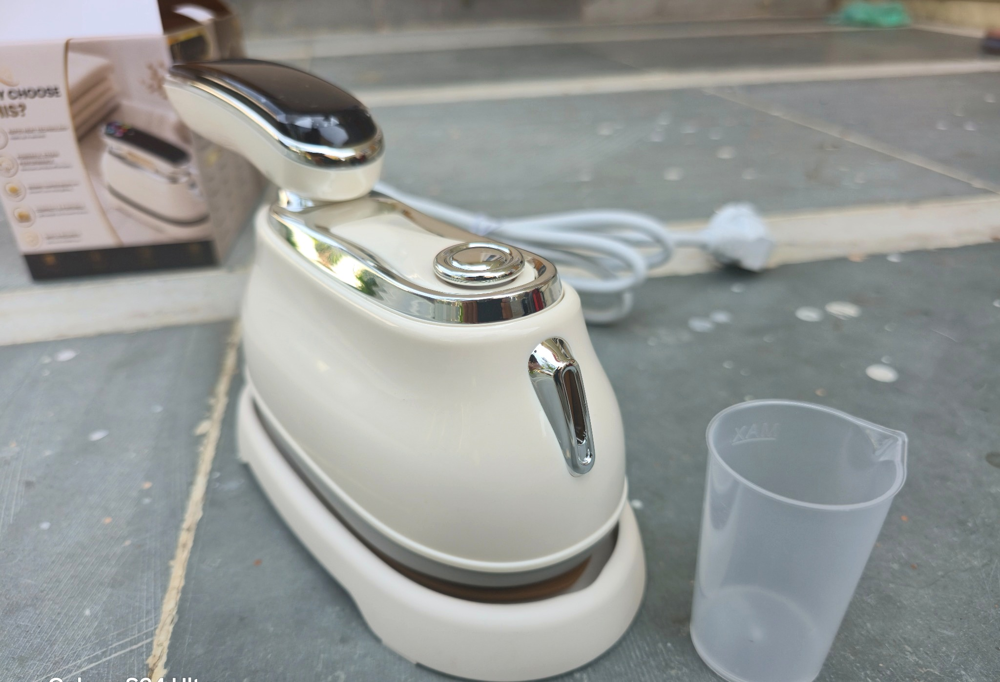
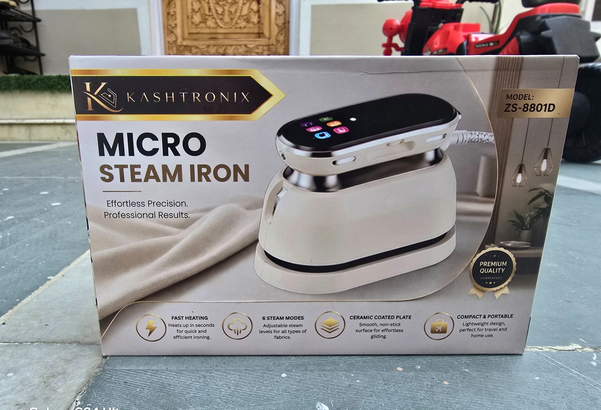
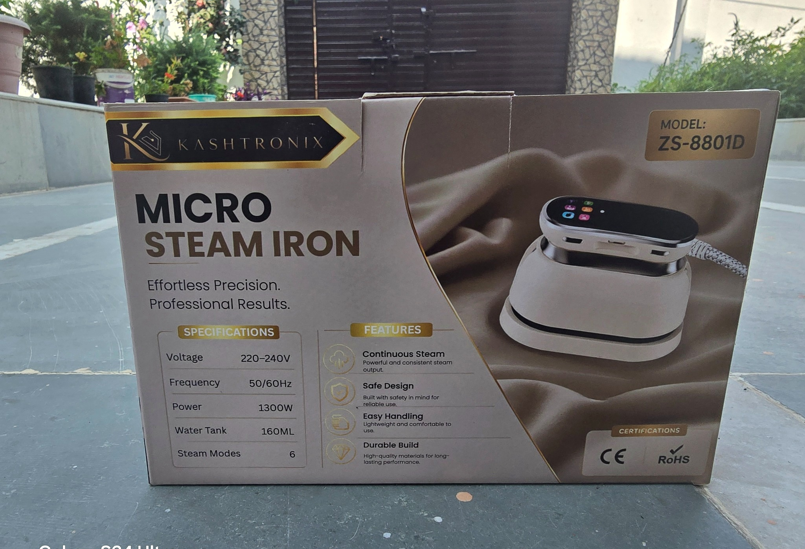
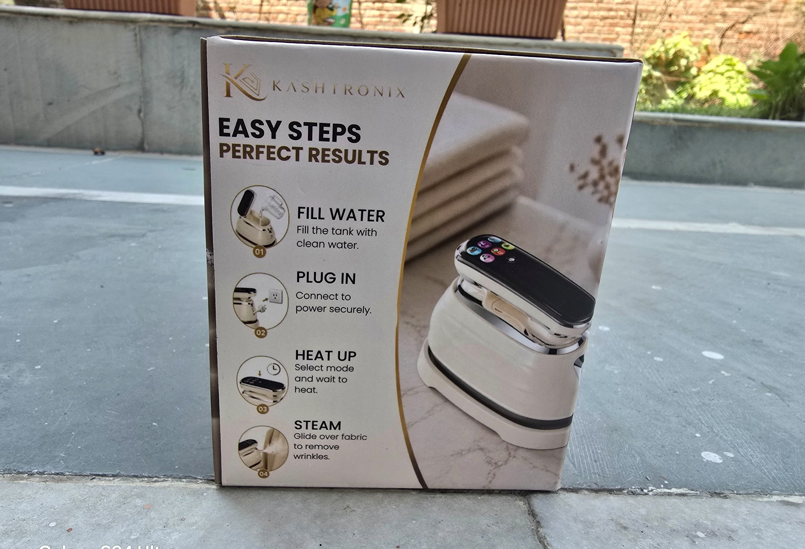
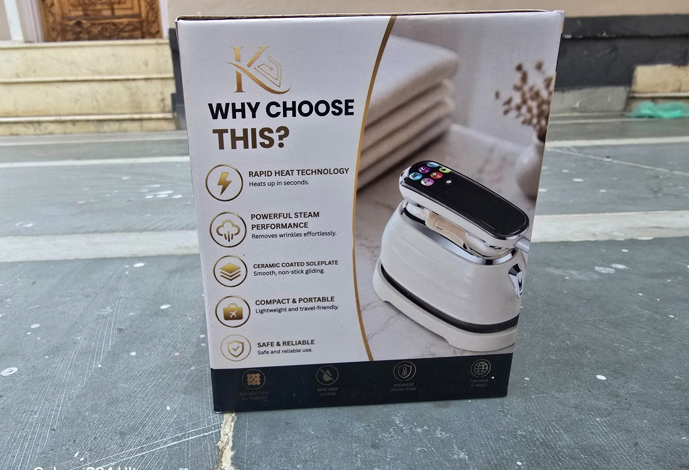

KASHTRONIX · ZS-8801D
Micro Steam
Iron.
Compact design. Powerful steam. Everyday precision.




THE FIRST KASHTRONIX PRODUCT
Designed to be compact without feeling compromised.
The ZS-8801D combines 1300W power with six steam modes, a 160ml water tank and a ceramic coated soleplate. Its compact form makes it suited to everyday use and travel.
ModelZS-8801D
Rated power1300W
Voltage220–240V
Frequency50/60Hz
Water tank160ml
Steam modes6
SoleplateCeramic coated
SHOP ON AMAZON
Scan. Explore. Shop.
Use the QR code or open our Amazon storefront directly.
Open Amazon storefrontPACKAGING
Everything at a
glance.
Product and packaging photography from the current KASHTRONIX Micro Steam Iron launch.


